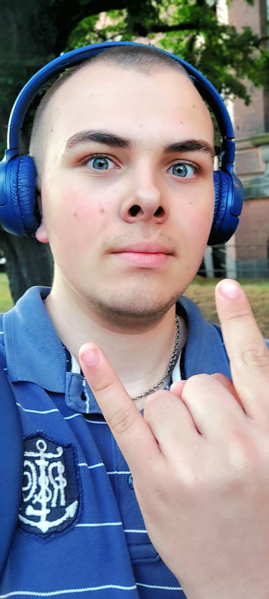

Opis
Ta podstrona jest o drugim najlepszym przyjacielu twórcy, z którym spędził sporo fajnych chwil na ulubionej konsoli twórcy.
Nick osoby, o której mówimy, to MaxGamerUA.
Z zawodu jest informatykiem.
Temat filozoficzny o osobie, o której mówimy:
„Obmyśla najczęściej temat tego, na ile świat jest niesprawiedliwy przez ludzi.”
Jakich gier nie lubi:
Fortnite i PUBG